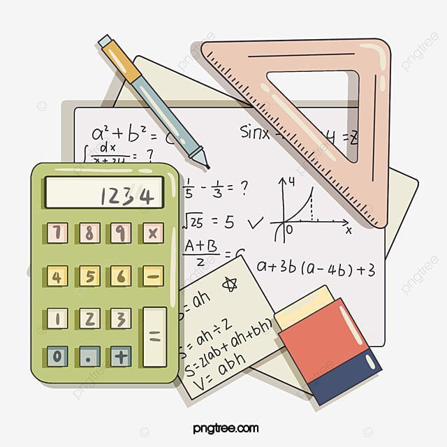

| Inicio |
En la vida cotidiana |
Las matematicas |
Álgebra |
En las matematicas |
en sus ramas |
La importancia de las matematicas

La importancia de las matemáticas puede evaluarse en distintos ámbitos, tanto en el ámbito profesional como en decisiones de la vida cotidiana que todos los individuos enfrentamos. En el siguiente artículo, profundizaremos sobre esto.
Las matemáticas, por un lado, son herramientas básicas para ciencias aplicadas como la ingeniería o la medicina. Asimismo, en el caso de la economía, son una herramienta básica sin la cual no podría llevarse a cabo ningún análisis. Pensemos, por ejemplo, en indicadores como el productor interior bruto (PIB), que se mide con números.
Además, las matemáticas se relacionan con otras áreas como el deporte. En este sentido, pudiendo medir el rendimiento de los gimnastas de élite, por ejemplo, y analizarlo utilizando la estadística.
En general, toda disciplina que haga uso de la estadística está recurriendo a las matemáticas.
De igual modo, en el ámbito de las artes, la pintura aplica conocimientos sobre geometría del espacio, cuando se dibuja cualquier entorno con perspectiva. En este sentido, cuando se busca reflejar, por ejemplo, que una habitación tiene un interior o que una parte del paisaje dibujado tiene una profundidad.
Otro caso muy particular es el de los fractales, que son figuras donde se cumple el principio de autosimilaridad, es decir, cada una de las partes se asemeja al todo. Esto se observa, por ejemplo, en la famosa obra la ola de Hokusai.